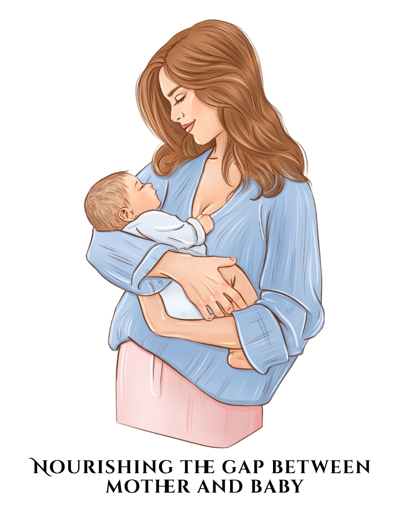

Compassionate Breastfeeding Support • Online & In-Clinic Consultation • Mother’s Touch
Compassionate Breastfeeding Guidance
Personalized lactation and breastfeeding support for latch issues, low milk supply, nipple pain, pumping, weaning, and newborn feeding concerns.

✨ Personalized Guidance • 🍼 Breastfeeding Support • 💙 Compassionate Care • 📲 Easy Booking
Mothers Supported
Mother Satisfaction
Common Feeding Concerns Covered
Compassionate Care
How We Help
Personalized care for the most common breastfeeding and newborn feeding concerns faced by mothers.
Support for nipple pain, sore feeding, and uncomfortable breastfeeding sessions.
Guidance to help your baby latch correctly and feed more effectively.
Assessment and practical strategies to improve milk production naturally.
Help when baby is refusing breastfeeds or struggling during feeding time.
Gentle support and feeding correction to reduce pain and promote healing.
Relief and feeding guidance for fullness, heaviness, and breast discomfort.
Support for pumping, storing milk, and building a flexible feeding routine.
Safe and smooth transition guidance for babies and mothers during weaning.
Our Services
Professional support tailored to your motherhood stage and feeding journey.
One-to-one in-person breastfeeding support and feeding assessment.
45–60 minsExpert online support from the comfort of your home.
45–60 minsQuick and practical guidance for urgent feeding doubts.
20–30 minsBreastfeeding preparation and confidence-building before delivery.
30–45 minsSupport for latch, milk supply, pain, and newborn feeding concerns.
45–60 minsStep-by-step help for gentle and healthy baby-led weaning.
30–45 minsTransformation
How mothers often feel before and after proper lactation guidance.
Meet Your Consultant
Lactation Consultant • Mother’s Touch
Dr. Bhoomi Vikani is dedicated to helping mothers navigate their breastfeeding journey with confidence, comfort, and clarity through compassionate and personalized lactation support.
From latch issues and nipple pain to low milk supply, pumping guidance, and weaning support — every consultation is designed to provide practical, evidence-based care tailored to the unique needs of mother and baby.
At Mother’s Touch, the goal is simple: to make every mother feel supported, understood, and empowered throughout her feeding journey.
Why Choose Us
A calm, supportive, and expert space where mothers receive practical breastfeeding care tailored to their journey.
Every mother and baby pair is different, and so is the guidance we offer.
We understand the emotional side of breastfeeding and support you with patience.
Trusted advice based on modern breastfeeding principles and practical care.
Choose support through clinic visits, video sessions, or guided follow-ups.
Patient Love
Kind words from mothers who found comfort, confidence, and support through Mother’s Touch.
Trusted by mothers for compassionate breastfeeding support
“I was struggling with latch and pain after delivery. Dr. Bhoomi guided me so calmly and clearly. It made a huge difference.”
“Very practical support and so easy to understand. I felt heard and supported throughout the consultation.”
“Her breastfeeding guidance gave me confidence when I was feeling confused and stressed.”
Social Presence
Helpful awareness content created to support mothers with practical and simple breastfeeding guidance.
Simple and practical breastfeeding awareness content for mothers.
View InstagramEducational posts and short-form guidance to help mothers feel more informed.
Follow NowFAQ
Quick answers to common breastfeeding consultation questions.
If you are facing latch issues, pain, low milk supply, breast refusal, or confusion with feeding, it is the right time to seek support.
Yes, online video consultations are available for mothers who need support from home.
In many cases, yes. Proper assessment and personalized guidance can help improve feeding and milk flow.
Yes, prenatal guidance helps mothers feel more prepared and confident about breastfeeding after birth.
Get In Touch
Whether you are facing breastfeeding difficulties or simply need expert guidance, Mother’s Touch is here to support you.
Available for in-clinic, video, and guided breastfeeding consultations.
Quick communication for appointment inquiries and breastfeeding support.
By appointment only • Flexible consultation timings available
Mothers trust Mother’s Touch for calm, practical, and supportive breastfeeding guidance.
⭐ Leave a Google ReviewPossible Triangle, Mavdi Bypass Rd, Mavdi Village, Mavdi, Rajkot, Gujarat 360004.